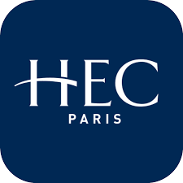

Academic Background
Education & Credentials
Formal Degrees
PhD
UNAM
Applied Economics
Research: Artificial Intelligence · Data Science · Public Policy
MSc
UNAM
International Economics — Blockchain & Public Finance Analytics
Bachelor's
Escuela Bancaria y Comercial
Finance & Banking · Mexico
Executive Education
🏛️'">
MIT — IDSS
Data Science & Machine Learning
2022
📊'">
The Wharton School
AI for Business · Financial Modeling · Analytics
2019 – 2023
EDHEC Business School
Investment Mgmt with Python & ML
2023
🏛️'">
Columbia University
Financial Engineering & Risk Mgmt
2018 – 2020
💹'">
NYIF · Google Cloud
Machine Learning for Trading
2023
Yale University
Financial Markets — Robert Shiller
2016

U. of Geneva · UBS
Investment Management
2016 – 2017
Honors

🏛️'">HEC Paris · AXA
Investment Mgmt in a Volatile World
2016